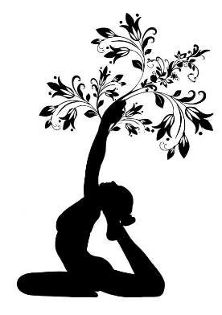

Home
-
Hatha Contemporâneo
Através de uma sequência fixa de posturas e estruturada em séries, o Hatha Contemporâneo caracteriza-se por uma prática dinâmica, intensa e fluida. As aulas estilo Mysore não são guiadas, os alunos são orientados pelo professor de forma individualizada e são incentivados a memorizar a sequência. A aula segue o nível de prática e ritmo da respiração de cada aluno.
Indicada a todos os níveis de praticantes.
-
Hatha Suave
Esta prática apresenta os ensinamentos tradicionais do Yoga voltados para a saúde integral e vitalidade. É constituída de ásanas (posturas), permanência, alinhamento, técnicas de respiração e de purificação interna, relaxamento e meditação.
Indicada a todos os níveis de praticantes
-
Yoga Restaurativo
O yoga restaurativo tem como foco o relaxamento profundo e a redução da ansiedade e estresse. Poucas posturas são executadas com longas permanências e com o uso de acessórios – mantas, bolsters, blocos e fitas – que proporcionam apoio e segurança ao corpo estimulando o sistema nervoso parassimpático. O SNP é responsável por diminuir a frequência cardíaca e a respiração e aumentar o fluxo sanguíneo para os órgãos vitais, entre outras coisas.
Indicada a todos os níveis de praticantes.
-
Kundalini
Leve sua prática de yoga para as alturas e use a força da gravidade para influenciar o seu corpo. Com o uso extensivo dos kuruntas (“cordas” fixas na parede) esta prática oferece inúmeros benefícios terapêuticos, além de construir força e mobilidade por todo o corpo.
Não indicada aos praticantes iniciantes.
-
Vinyasa Flow
Uma prática de Vinyasa que cultiva a importância da respiração e do alinhamento. Os ajustes ganham especial atenção nesta aula visando a consciência e o aprofundamento na execução dos asanas (posturas). Em geral, é uma abordagem vigorosa do yoga, porém menos dinâmica e fluída que o Vinyasa Flow.
Indicada a todos os níveis de praticantes.
-
Slow Vianyasa
Prática de fluída voltada à construção de força. No core Vinyasa trabalhamos exercícios físicos entremeados com sequências de ásanas (posturas de yoga), explorando contrações musculares distintas (isotônica e isométrica) o que gera um trabalho muscular extremamente eficiente e rápido. Esta prática especialmente ajuda no fortalecimento do core, essencial para um maior controle corporal, boa postura e para prevenir lesões. Apesar da prática ser simples e acessível, ela é intensa e revigorante, auxiliando e facilitando a construção muscular necessária para o desenvolvimento de diversos tipos de posturas e estilos de práticas.
Indicada a todos os níveis de praticantes.